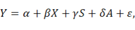
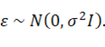
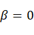

Isobaric labeling-based mass spectrometry (ILMS) has been widely used to quantify, on a proteome-wide scale, the relative protein abundance in different biological conditions. Large-scale proteomic studies based on ILMS, however, typically involve multiple runs of mass spectrometry (MS), bringing great computational difficulty to the simultaneous comparison and other integration analyses of all ILMS samples. We present zMAP, a toolset that makes ILMS intensities comparable across MS runs by modeling the associated mean-variance dependence and accordingly applying a variance stabilizing z-transformation. Specific efforts have been made to render the model fitting procedure resistant to underlying hypervariable proteins. Two case studies demonstrate the effectiveness of zMAP in handling large-scale ILMS data sets. Specifically, the transformed z-statistics, as a new kind of measurements of protein abundance, have effectively unlocked a broad range of integration analyses that cannot otherwise be applied on original ILMS intensities.
The design of zMAP aims to simultaneously compare protein profiles of multiple samples and integrate samples from different MS runs for identifying hypervariable proteins across samples. zMAP models the mean-variance dependence associated with ILMS intensities and accordingly applies a variance-stabilizing z-transformation(z-statistic), which dramatically increases the comparability between samples generated by different MS runs. The z-statistic can be widely applied in downstream analyses, including PCA, clustering analysis, GSVA, and so on. To facilitate biologists' usage, we offer a user-friendly and straightforward web service. zMAP requires that all the involved MS runs are associated with the same biological design, such that the average intensities across all samples in each run are biologically identical.
|
Parameter |
Description |
|
protein intensity file |
A tab-delimited file containing raw gene-level protein intensity with samples in columns, and gene symbols in rows. Note: 1. The protein intensity matrix does not require normalization. 2. Sample names can only consist of letters, numbers, and underscores. |
|
sample information file |
Sample information file is a three-column, tab-delimited file with the first line identifying the columns. The column names are Sample_id, Sample_condition, and MS_run. |
|
window size |
The protein number in each sliding window, the default is 400. |
|
step size |
The step size for moving the window, the default is 100 proteins. |
|
percent |
To avoid the influence of differentially expressed proteins across samples, which can lead to an overestimated variance, only a certain proportion (30% by default) of the proteins with the smallest observed variances are used for the quantile regression. |
|
method |
The method used for non-linear fitting, exponential_function or natural_cubic_spline |
A tab-delimited file containing raw gene-level protein intensity with samples in columns, and gene symbols in rows.
Note:
1. The protein intensity matrix does not require normalization.
2. Sample names can only consist of letters, numbers, and underscores.
Note:
Sample_id
Sample_id can only consist of letters, numbers, and underscores.
Sample_condition
Sample_condition must consist only of letters, numbers, and underscores.
MS_run
The MS run in which the proteins of the sample were quantified.
It is crucial for downstream analysis and visualization.
This file will be utilized to identify hypervariable proteins across samples.
The results directory encompasses figures of normalized data, linear regression, nonlinear regression outcomes, and so on. Users can consult these resources to evaluate data quality and model fitting.
reverse-zMAP module is primarily designed for handling MS runs with relatively large sample sizes. The major concern is that, with the increase of the number of samples, the odds that outlier measurements are involved for each specific protein increase, giving rise to excessively large variances. Consequently, in the sliding-window process of the zMAP module, the proportion of proteins that are suitable to use for the quantile regression in each window can be very small. Besides, fitting a single mean-variance curve (MVC) for a large number of samples may not be flexible enough to allow for the variation of mean-variance trend across samples. In practice, large-scale proteomic studies have frequently applied the strategy of adding a biologically identical reference sample to each individual MS run. For example, in cancer studies, a mixed sample is typically generated by pooling tumor samples and/or normal adjacent tissues (NATs) from several related patients in equal protein amounts. The proteome of this mixed sample is then profiled in every MS run separately. reverse-zMAP module alleviates the influence of outliers by repeatedly making pairwise comparisons, which in the meanwhile allows the modeling of sample-specific mean-variance trend, but it requires a biologically identical reference sample in each MS run for a subsequent integration across MS runs.
|
Description |
|
|
protein intensity file |
|
|
sample information file |
The sample information file is a four-column, tab-delimited file with the first line identifying the columns. The column names are Sample_id, MS_run, Sample_condition, and internal_ref. |
|
window size |
The protein number in each sliding window, the default is 400. |
|
step size |
The step size for moving the window, the default is 100 proteins. |
|
percent |
To avoid the influence of differential proteins, only a certain proportion (50% by default) of the proteins with the middle are used for quantile regression. |
|
method |
The method used for non-linear fitting, exponential_function or natural_cubic_spline. |
A tab-delimited file containing raw gene-level protein intensity with samples in columns, and gene symbols in rows.
Note:
1. The protein intensity matrice does not require normalization.
2. Sample names can only consist of letters, numbers, and underscores.
Sample information file is a four-column, tab-delimited file with the first line identifying the columns. The column names are Sample_id,MS_run, Sample_condition and internal_ref.
Note:
To avoid code conflicts, the column headers are:
Sample_id
Sample_id can only consist of letters, numbers, and underscores.
MS_run
The MS run in which the proteins of the sample were quantified.
Sample_condition
Sample_condition consists only of letters, numbers, and underscores.
internal_ref
Yes or No. Indicate whether the sample is a reference sample.
It is crucial for downstream analysis and visualization.
reverse_zmap_chi_square_pvalue.txt
This file contains 5 columns: protein, number of samples where this protein was not detected, chi-square statistic, p-value, BH-corrected p-value, and Bonferroni-corrected p-value. This file will be utilized to identify hypervariable proteins (HVPs) across samples.
4.1 Box plot of the R2 values of all quantile regressions.
4.2 The distribution of R2 values from the fitting of M-A curves. The associated three quartiles are marked.
r2_distribution_of_nonlinear_model_fitting_for_estimated_variance.pdf
4.3 The distribution of R2 values from the fitting of MVCs.
r2_distribution_of_nonlinear_fitting_for_intercept_u.pdf
|
Description |
|
|
z-statistic file |
|
|
sample information file |
The sample information file is a three-column, tab-delimited file with the first line identifying the columns. The column names are Sample_id Sample_condition and MS_run. Note: To avoid code conflicts, Sample_condition consists only of letters, numbers, and underscores. |
Output file z_statistic_table.txt from zMAP or reverse-zMAP as input.
Sample information file is a three-column, tab-delimited file with the first line identifying the columns. The column names are Sample_id, Sample_condition, and MS_run.
Note:
To avoid code conflicts:
Sample_id
Sample_id must consist of letters, numbers, and underscores.
Sample_condition
Sample_condition must consist only of letters, numbers, and underscores.
MS_run
The MS run in which the proteins of the sample were quantified.
pearsonr_correlation_coefficient_of_z_statistic.txt
pearsonr_correlation_coefficient_of_z_statistic.pdf
A principal component plot displaying samples in a 2D plane defined by their first two principal components. This plot provides a concise visualization of the overall impact of sample conditions and MS runs.
The chi-square statistics derived by zMAP along with the associated numbers of degrees of freedom were summed across MS runs for each protein, giving rise to a p-value that assessed the overall expression variability of the protein. This functionality is designed to select hypervariable proteins (HVPs) from the output files of zMAP and cluster them to obtain multiple expression signatures. Then, pathway enrichment analysis was conducted on these signatures to reveal biological insights.
|
Parameter |
Description |
|
Chi-square and p-value file |
Output file zmap_chi_square_pvalue.txt from zMAP. |
|
z-statistic file |
Output file z_statistic_table.txt from zMAP. |
|
sample information file |
The sample information file is a three-column, tab-delimited file with the first line identifying the columns. The column names are Sample_id, Sample_condition, and MS_run. |
|
adjusted p-value cutoff |
BH-corrected p-value cutoff for identifying HVPs. The default is 0.05. |
|
number of clusters for HVPs |
The hierarchical clustering of HVPs into multiple clusters reveals diverse expression signatures across different sample conditions. |
|
minimum number of proteins within each cluster |
If the number of proteins within certain clusters falls below the specified minimum count, these clusters will be merged into a single cluster labeled as cluster_0. As a result, the final number of clusters may be fewer than what the user initially specified. |
|
number of top-ranked DEPs |
The z-statistics associated with each protein are separately averaged within each sample condition. The standard deviation of these average z-statistics for each protein is then calculated. Subsequently, proteins are ranked according to these standard deviations, and the top-ranked differentially expressed proteins (DEPs) are selected. |
|
number of clusters for top-ranked DEPs |
The K-means clustering of top-ranked differentially expressed proteins into multiple clusters identifies diverse expression patterns across various sample conditions. |
Output file zmap_chi_square_pvalue.txt from zMAP as input.
Output file z_statistic_table.txt from zMAP as input.
As above
These proteins were clustered into multiple clusters.
hypervariable_proteins_cluster_heatmap_bh_cutoff_0.05.pdf
Enriched biological processes and pathways for protein clusters (from GO and keg enrichment analysis) are integrated within the dictionary.
These proteins were clustered into multiple clusters.
top_100_differentially_expressed_proteins_heatmap.pdf
For delineating molecular subtypes at the protein level, this function is designed to select a subset of highly variable proteins across samples. It then undertakes unsupervised clustering on the samples, offering quantitative evidence to ascertain both the number and composition of potential clusters within the dataset. For in-depth algorithmic insights, please consult the details provided in Consensus Clustering.1,2
|
Description |
|
|
z-statistic file |
Output file z_statistic_table.txt from reverse-zMAP |
|
sample information file |
The sample information file is a three-column, tab-delimited file with the first line identifying the columns. The column names are Sample_id Sample_condition and MS_run. |
|
Sample condition |
perform clustering on samples under specific conditions. |
|
Protein number |
Proteins were ranked based on their variance across samples, and the z-statistic matrices of the top_n proteins were used for clustering. By default, the top_n is set to 3000. |
Output file z_statistic_table.txt from reverse-zMAP as input.
As above.
cluster_XX.csv (XX is the number of clusters)
We invoked the ConsensusClusterPlus R package at the underlying level. For interpretation of the output graphics, please refer to https://bioconductor.org/packages/release/bioc/vignettes/ConsensusClusterPlus/inst/doc/ConsensusClusterPlus.pdf
In the prior step, samples underwent grouping using the z-statistic matrix derived from HPVs, with the intent of correlating proteomic subgroups to clinical and molecular features. We then employed either the Chi-square test or Fisher's exact test to examine the association between proteomic subgroups and discrete sample features. This choice was made based on the number of categories within each feature. For continuous features, we utilized Student’s t-test or ANOVA.
ANOVA was further applied to pinpoint differentially expressed proteins (DEPs) among sample groups. Hierarchical clustering of proteins ensued, driven by the z-statistic matrix, revealing distinctive expression signatures. Following this, pathway enrichment analysis was conducted for each set of proteins.
|
Parameter |
Description |
|
z-statistic file |
Output file z_statistic_table.txt from reverse-zMAP. |
|
cluster file |
A comma-separated file with the first column containing sample names and the second column indicating the respective sample groups. |
|
Sample clinical and molecule file |
A tab-separated file with the first column representing sample names, and the subsequent columns containing clinical and molecular features. Please note that column names can only include letters, numbers, and underscores. Allows NaN values. When plotting, NaN values are represented by white color by default. |
|
discrete features |
This is a string where discrete features are comma-separated. For example, 'gender, stage'. |
|
Continuous features |
This is a string where continuous features are comma-separated. For example, 'age, tumor_size'. |
|
color for discrete features |
Tab-delimited file with no column names. The first column represents discrete sample features, and the second column corresponds to the hexadecimal color code for each feature. |
|
color for continuous feature |
Tab-delimited file with no column names. The first column represents discrete sample features, and the second column corresponds to the colormaps in Matplotlib for each feature. |
|
FDR cutoff |
FDR cutoff used for identifying DEPs. The default FDR is 0.05. |
|
Cluster number for DEPs. |
Output file z_statistic_table.txt from reverse-zMAP as input.
A comma-separated file with the first column containing sample names and the second column indicating the respective sample groups.
A tab-separated file with the first column representing sample names, and the subsequent columns containing clinical and molecular features. Please note that column names can only include letters, numbers, and underscores. Allows NaN values. When plotting, NaN values are represented by white color by default.
Tab-delimited file with no column names. The first column represents discrete sample features, and the second column corresponds to the hexadecimal color code (such as #808080) for each feature.
Tab-delimited file with no column names. The first column represents discrete sample features, and the second column corresponds to the colormaps in Matplotlib for each feature.
Colormaps: https://matplotlib.org/stable/users/explain/colors/colormaps.html
sample_clustering_association_with_clinical_and_molecule_feature.pdf
The directory contains pathway enrichment results for each expression signature.
Plots the Kaplan-Meier survival curve and assesses the significance of survival differences among subgroups.
|
Parameter |
Description |
|
survival and group file |
The sample information file is a four-column, tab-delimited file with the first line identifying the columns. The column names are Sample_id, survival_time, death_or_not, and group. |
Sample information file is a four-column, tab-delimited file with the first line identifying the columns. The column names are Sample_id, survival_time, death_or_not and group.
Cox proportional hazard regression model is used to identify prognostic markers based on z-statistic.3
|
Description |
|
|
z-statistic file |
Output file z_statistic_table.txt from reverse-zMAP |
|
The sample information file is a three-column, tab-delimited file with the first line identifying the columns. The column names are Sample_id, survival_time, and death_or_not. |
Output file z_statistic_table.txt from reverse-zMAP.
Sample information file is a three-column, tab-delimited file with the first line identifying the columns. The column names are Sample_id, survival_time, and death_or_not.
Proteins are categorized into three groups: favorable, unfavorable, and not prognostic.
To pick out the proteins that were associated with non-silent somatic mutations, QTL analysis is used. Somatic mutations in at least 10 samples (Users determine based on the number of samples.). Then, we pick out the proteins whose expression was detected in at least half of the tumor samples. Finally, for each candidate gene-protein pair, we performed a regression of the protein expression against the mutation status of the gene using MatrixEQTL R package4, by fitting the following linear model:


Here, was a vector of the z-statistics (derived by reverse-zMAP) of the protein in tumor samples; was the non-silent somatic mutation indicators of the gene; and referred to the sex and age respectively, as well as other control variable; was a vector of independent and identically distributed noise variables; , , , and were unknown parameters. This model was fitted by applying the least squares method, and the null hypothesis  was then tested by applying the t-test.
|
Parameter |
Description |
|
Output file z_statistic_table.txt from reverse-zMAP |
|
|
mutation file |
Tab-delimited file where rows represent genes, columns represent samples, and values are coded as 1 for non-silent mutations and 0 for no non-silent mutations. |
|
The file includes additional covariates. Columns represent samples, while rows encompass various additional covariates, including age, sex, and others. The values inside must be numerical. |
|
|
gene position file |
The file containing transcription start site information for all genes in the genome. It contains three columns with the column names being gene, chromosome, and tss respectively. |
|
chromosome length file |
Tab-delimited file contains two columns, chromosome and length. |
|
FDR cutoff |
The default FDR is 0.05. |
Output file z_statistic_table.txt from reverse-zMAP.
Tab-delimited file where rows represent genes, columns represent samples, and values are coded as 1 for non-silent mutations and 0 for no non-silent mutations.
The file includes additional covariates. Columns represent samples, while rows encompass various additional covariates, including age, sex, and others. The values inside must be numerical.
The file containing transcription start site information for all genes in the genome. It contains three columns with the column names being gene, chromosome, and tss respectively.
Tab-delimited file contains two columns, chromosome and length.
pQTL_results_FDR_XX.pdf (XX is FDR cutoff)
Two-dimensional plot displaying the significant gene-protein associations, with Y and X axes representing the locations of proteins and mutated genes in the genome, respectively. The total number of proteins associated with each mutated gene is also displayed. For a specific gene-protein association, Beta>0 suggests the protein has increased expression with the mutation of the gene, and vice versa.
results_association_z_statistic_with_mutation.txt
mutation_associated_protein_count.txt
GSVA calculates gene set enrichment scores (GSVA scores) for each sample5 using the z-statistic matrix. Differential expression analysis is then conducted on these GSVA scores using limma6, aiming to identify changes in pathway activities across multiple sample groups. Finally, the differential pathway activities across sample groups are visualized using a heatmap.
|
Parameter |
Description |
|
z-statistic file |
Output file z_statistic_table.txt from zMAP or reverse-zMAP as input. |
|
sample information file |
Sample information file is a three-column, tab-delimited file with the first line identifying the columns. The column names are Sample_id, Sample_condition and MS_run. |
|
Extract a table of the top-ranked differentially active biological processes and KEGG pathways across sample groups. |
|
|
Adjusted pvalue cutoff |
Adjusted pvalue cutoff for the differentially active. biological processes and pathways across sample groups. The default is 0.05. |
Output file z_statistic_table.txt from zMAP or reverse-zMAP as input.
As above
kegg_gsva_differential_pathway_activity_top_XX.csv (XX is the number of top-ranked differentially active gene sets)
go_gsva_differential_pathway_activity_top_XX.csv (XX is the number of top-ranked differentially active gene sets)
3. Heatmap of differential pathway activities:
kegg_gsva_differential_pathway_activity_top_XX_adj.P.Val_XXX.pdf
go_gsva_differential_pathway_activity_top_XX_adj.P.Val_XXX.pdf
(both PDF and PNG, XX is the number of top-ranked differentially active gene sets，XXX is the adjusted P-value cutoff for differential activity pathway)
A protein co-expression network is constructed based on the z-statistics. Proteins detected in more than half of the samples are included in the analysis. We first used the KNN method to impute missing values in the z-statistic matrix. Then, we obtained the PTCCs for all pairs of the proteins by applying a previously developed method for covariance matrix estimation7. Finally, the statistical significance of each PTCC was assessed based on a mixture model8. When constructing the co-expression network, an edge was added to link a protein pair if and only if the corresponding PTCC was positive and significant.
|
Parameter |
Description |
|
z-statistic file |
Output file z_statistic_table.txt from zMAP or reverse-zMAP as input. |
Input Files
1.z statistic file (example)
Output file z_statistic_table.txt from zMAP or reverse-zMAP as input.
Output Files
1. protein-protein interaction pairs
Reference
1 Monti, S., Tamayo, P., Mesirov, J. & Golub, T. Consensus clustering: A resampling-based method for class discovery and visualization of gene expression microarray data. Mach Learn 52, 91-118, doi:Doi 10.1023/A:1023949509487 (2003).
2 Wilkerson, M. D. & Hayes, D. N. ConsensusClusterPlus: a class discovery tool with confidence assessments and item tracking. Bioinformatics 26, 1572-1573, doi:10.1093/bioinformatics/btq170 (2010).
3 Cox, D. R. Regression models and life‐tables. Journal of the Royal Statistical Society: Series B (Methodological) 34, 187-202 (1972).
4 Shabalin, A. A. Matrix eQTL: ultra fast eQTL analysis via large matrix operations. Bioinformatics 28, 1353-1358 (2012).
5 Hänzelmann, S., Castelo, R. & Guinney, J. GSVA: gene set variation analysis for microarray and RNA-seq data. BMC bioinformatics 14, 1-15 (2013).
6 Ritchie, M. E. et al. limma powers differential expression analyses for RNA-sequencing and microarray studies. Nucleic acids research 43, e47, doi:10.1093/nar/gkv007 (2015).
7 Schäfer, J. & Strimmer, K. A shrinkage approach to large-scale covariance matrix estimation and implications for functional genomics. Statistical applications in genetics and molecular biology 4, Article32, doi:10.2202/1544-6115.1175 (2005).
8 Efron, B. J. J. o. t. A. S. A. Large-scale simultaneous hypothesis testing: the choice of a null hypothesis. 99, 96-104 (2004).